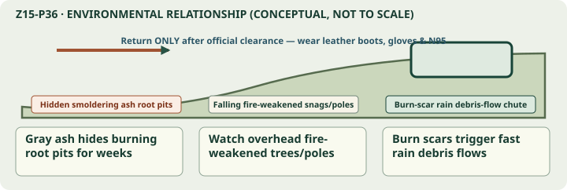

Z15-P36 · Disaster scenarios · New manuscript
Follow strict post-wildfire return clearance for ash pits, snags, and debris flows
Prevent deep hidden ash-pit burns, falling fire-weakened trees, utility shocks, and post-fire mudslides when returning to burned areas.
When it applies · Residents returning to wildfire-affected neighborhoods, rural properties, or forested corridors after officials lift closures.
Equipment · Official re-entry clearance, leather boots, long sleeves, gloves, NIOSH N95 respirator, and flash-flood/debris-flow alert channel.

Actions
- Return ONLY after fire officials lift evacuation closures; walk carefully wearing thick leather boots, gloves, and N95 masks because gray ash heaps conceal smoldering underground root embers and hot ash pits capable of melting soles and causing deep burns weeks after flames pass.[D08, C14, M07]
- Watch overhead constantly for silent falling fire-weakened trees ("snags"), burned wooden utility poles, damaged propane tanks, and downed power lines—and NEVER wet down deep toxic structural ash indiscriminately without PPE and local hazmat/debris guidance.[E13, D08, D04]
- Stay alert for years after a wildfire during heavy rainstorms: burned hillsides lose root-soil stability and shed rain violently into fast-moving flash floods and deadly debris flows even from modest downpours.[X11, D05]
Failure recognition · Letting children and pets run across soft gray ash in sneakers the morning after a neighborhood wildfire closure lifts.[D08, C14]
Verify · Confirm official re-entry clearance, leather boots/gloves/N95 worn, overhead snags/poles checked, and post-fire flood alerts active.[D08, X11]
Stop or change course · Smoldering hot spots, hissing propane/gas lines, leaning burned trees, or heavy rain over upslope burn scars require immediate withdrawal and 911/official report.[D08, X11, U11]
Evidence and editorial notes
- C14 · USDA Forest Service · Know Before You Go: Fire (current web edition)
- Section: Know Before You Go > Extinguish and Site Clearance · Conditions: Authorized outdoor campfire on mineral soil
Support: Clear flammable grass, needles, and twigs down to mineral soil before building a small fire, keep flames away from overhanging branches, and confirm cold ash before leaving.
Limitations: Root systems and organic duff beneath shallow clearing can ignite invisibly. · Conflicting evidence: None; aligns with SMOKEY C02/C04.
Editorial note: Underpins mineral-soil cutaway and underground root-fire failure cards. · Specialist reviewer: Wildland fire prevention
Primary source · checked 2026-11-24 - D04 · FEMA / Ready.gov · Thunderstorms and Lightning (current web edition)
- Section: Severe Thunderstorms, Straight-Line Winds, Hail, and Lightning · Conditions: Severe Thunderstorm Warnings, derechos, and electrical storms
Support: Move indoors to a substantial building immediately when thunder is heard or severe wind warnings issue; stay away from windows, corded appliances, and plumbing during lightning, and avoid downed limbs and energized downed lines after derechos.
Limitations: Straight-line derecho winds can rival tornado damage across hundreds of miles and cause multi-day regional power blackouts. · Conflicting evidence: None; integrates with E07 and E18.
Editorial note: Grounds severe-storm, hail, and straight-line wind response cards. · Specialist reviewer: Meteorology and utility safety
Primary source · checked 2026-11-24 - D05 · FEMA / Ready.gov · Floods (current web edition)
- Section: Floods: During; Turn Around, Don’t Drown · Conditions: Flooded roads or trails, flood alert, or post-flood re-entry
Support: Move to safe higher ground when directed, never walk or drive into floodwater, and respect closures and re-entry restrictions.
Limitations: Depth examples are warning illustrations, never safe entry thresholds. Trapped or submerged vehicles require emergency help and scene-specific response. · Conflicting evidence: See A02 claim audit for boundaries.
Editorial note: Core flood evacuation, water-avoidance, and safe re-entry evidence. · Specialist reviewer: Emergency management and flood hydrology
Primary source · checked 2026-11-24 - D08 · FEMA / Ready.gov · Wildfires (current web edition)
- Section: Stay safe during wildfire; evacuate when directed · Conditions: Wildfire threat with local warning and evacuation system
Support: Plan to leave early and follow official open routes and local evacuation orders. Return only when allowed.
Limitations: Ready–Set–Go is one local vocabulary. Vehicle staging is editorial and does not justify delay after a warning. · Conflicting evidence: See A02 claim audit for boundaries.
Editorial note: Grounds wildfire evacuation readiness and route-abort decisions. · Specialist reviewer: Wildland fire management and emergency services
Primary source · checked 2026-11-24 - E13 · USDA Forest Service · Hazard Tree Safety (agency PDF)
- Section: What You Can Do to Reduce Risk · Conditions: Forest campsites and stops
Support: Look for dead trees and falling material. Stay away from hazardous trees and move away when winds make the site unsafe.
Limitations: Internal decay and root rot can cause live-looking trees to fail in saturated soils or high wind. · Conflicting evidence: Does not specify a universal exclusion radius; tree height and slope govern fall reach.
Editorial note: Prevents false precision on fall-zone distance while requiring overhead screening. · Specialist reviewer: Land management and arboriculture safety
Primary source · checked 2026-11-24 - M07 · NIH / MedlinePlus · Burns (current web edition)
- Section: Thermal Burn Cooling, Covering, and Severity Escalation · Conditions: Minor vs major thermal burns (flame, scald, contact)
Support: Cool minor superficial burns with cool (not icy) running water, remove constricting rings/clothing not stuck to skin, cover loosely with clean non-stick dressing, and seek emergency care for deep, large, facial, hand, foot, genital, joint, or airway burns.
Limitations: Never apply ice, butter, grease, or ointments to fresh burns, and do not pop intact blisters. · Conflicting evidence: None; aligns with ARC/ABA lay burn first aid.
Editorial note: Establishes burn-cooling limits and automatic clinical-escalation zones. · Specialist reviewer: Burn care and wilderness medicine
Primary source · checked 2026-11-24 - U11 · U.S. DOT PHMSA · Pipeline Leak Recognition and What to Do (Current web edition)
- Section: What to DO; What Not to Do · Conditions: Suspected gas or pipeline leak
Support: Leave the affected area and call 911 and the provider from safety. Avoid spark sources and leave valve and restoration decisions to authorized responders.
Limitations: Do not transpose outdoor hazmat sheltering directions to a gas leak inside the dwelling. · Conflicting evidence: See A02 claim audit for boundaries.
Editorial note: Establishes strict utility-leak evacuation and licensed restoration gates. · Specialist reviewer: Gas utility safety and fire service
Primary source · checked 2026-11-25 - X11 · FEMA / Ready.gov · Landslides and Debris Flow (current web edition)
- Section: Landslides and Debris Flow > Warning Signs and Burn Scars · Conditions: Steep slopes, recent wildfire burn scars and saturated mountain/coastal terrain
Support: Heavy rainfall on steep terrain or wildfire burn scars triggers fast-moving debris flows; watch for rumbling, tilting trees, sudden muddy stream surges or new ground cracks and evacuate perpendicular/uphill away from valleys immediately.
Limitations: Debris flows travel faster than a person can run and recur in previously scarred drainages. · Conflicting evidence: None; pairs with E04 and E17.
Editorial note: Supports mountain/burn-scar landslide and debris-flow hazard cards. · Specialist reviewer: Geological hazard and emergency management
Primary source · checked 2026-11-24
Source lineage · FEMA Ready.gov Wildfires and Landslides; new manuscript · Classification · New manuscript.